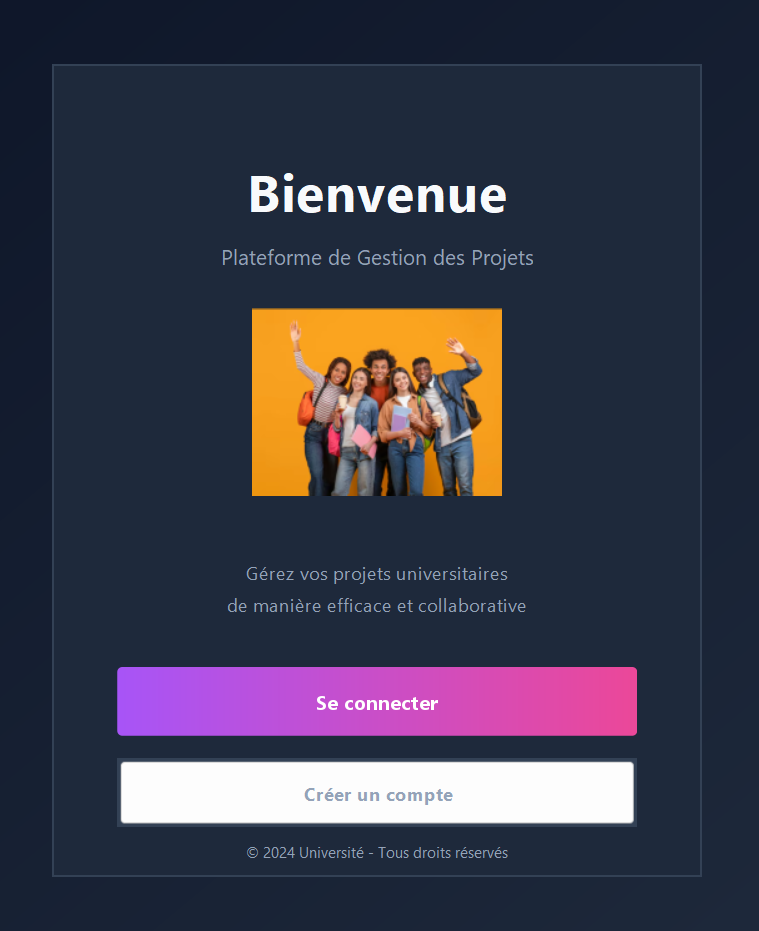
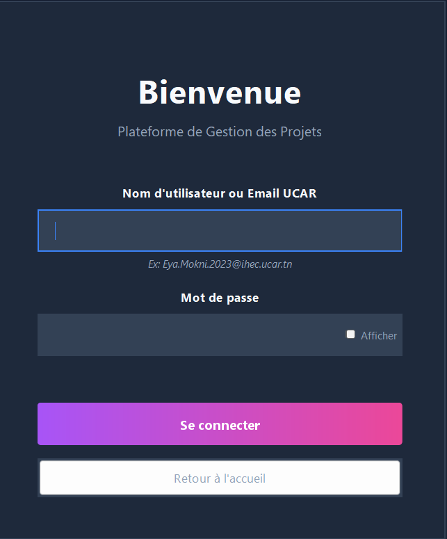
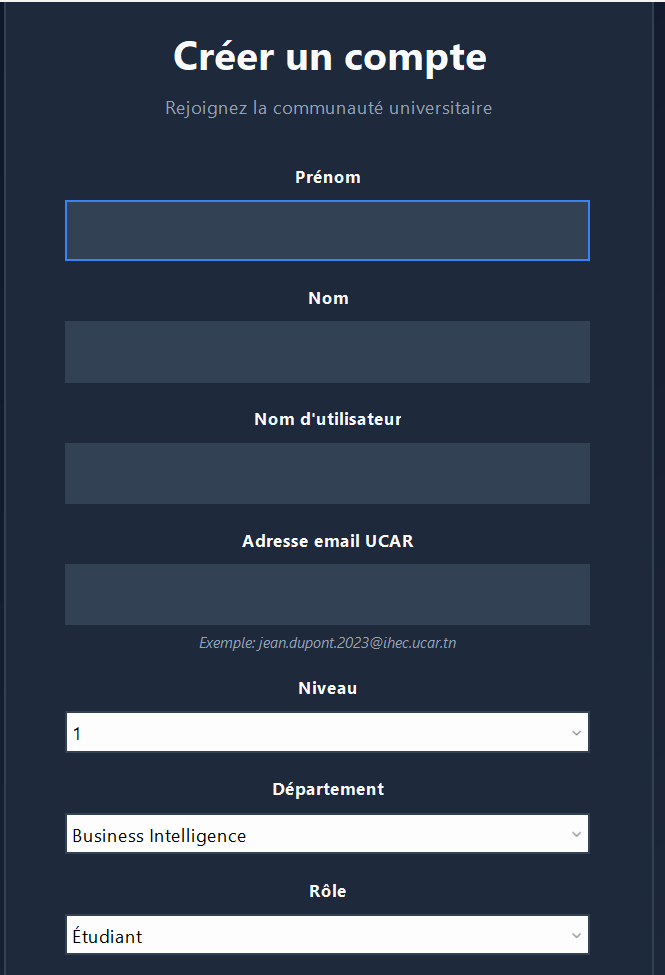
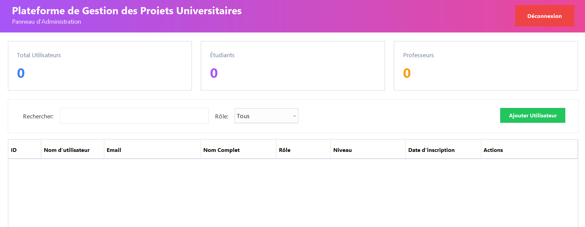

Platforme de gestion des Projets
Decembre 2025
Universitaire
Full Stack Developer
Java, Java Swings, SQL Server
La gestion académique des projets étudiants génère un volume important de données chaque semestre. L'absence d'outil centralisé entraîne souvent une perte d'information, des redondances dans les sujets traités et une difficulté pour l'administration à obtenir des statistiques fiables sur la production académique.
Comment concevoir un système d'information performant, sécurisé et ergonomique permettant de dématérialiser le cycle de vie des projets universitaires, tout en garantissant l'intégrité des données via une base de données relationnelle professionnelle ?
L'application a été construite sur une architecture MVC (Modèle-Vue-Contrôleur) robuste, utilisant Java Swing pour l'interface graphique et Microsoft SQL Server pour la persistance des données. Contrairement aux approches basiques stockant les données en mémoire, ce projet intègre un véritable motif de conception DAO (Data Access Object) pour dialoguer avec la base de données, sécurisé par une authentification Windows intégrée.
Ce projet de Gestion des Projets Universitaires démontre la capacité à construire une application d'entreprise complète avec Java. En combinant une architecture logicielle rigoureuse (MVC, DAO, Singleton), une base de données robuste (SQL Server) et une interface soignée, l'application répond efficacement aux besoins de centralisation et de gestion académique. Elle constitue une base solide pour de futures évolutions vers des architectures web ou micro-services.



